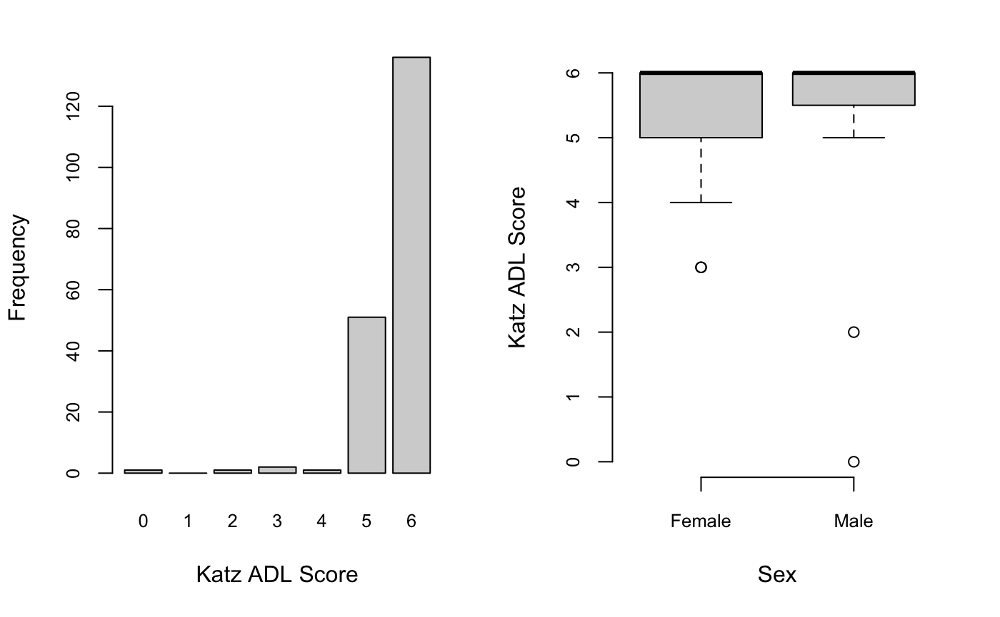

The RAM-OP Workflow is summarised in the diagram below.
The oldr package provides functions to use for all steps after data collection. These functions were developed specifically for the data structure created by the EpiData or the Open Data Kit collection tools. The data structure produced by these collection tools is shown by the dataset testSVY included in the oldr package.
testSVY #> # A tibble: 192 x 90 #> ad2 psu hh id d1 d2 d3 d4 d5 f1 f2a f2b f2c #> <int> <int> <int> <int> <int> <int> <int> <int> <int> <int> <int> <int> <int> #> 1 1 201 1 1 1 67 2 5 2 3 2 1 1 #> 2 1 201 2 1 1 74 1 2 2 3 2 1 1 #> 3 1 201 3 1 1 60 1 2 2 2 2 2 2 #> 4 1 201 3 2 1 60 2 2 2 3 2 2 1 #> 5 1 201 4 1 1 85 2 5 2 3 2 1 1 #> 6 1 201 5 1 2 86 1 5 1 4 2 1 1 #> 7 1 201 6 1 1 80 1 5 2 3 2 1 1 #> 8 1 201 6 2 1 60 2 5 2 3 2 2 1 #> 9 1 201 7 1 1 62 1 2 2 2 2 1 1 #> 10 1 201 8 1 1 72 2 5 2 2 2 1 1 #> # … with 182 more rows, and 77 more variables: f2d <int>, f2e <int>, f2f <int>, #> # f2g <int>, f2h <int>, f2i <int>, f2j <int>, f2k <int>, f2l <int>, #> # f2m <int>, f2n <int>, f2o <int>, f2p <int>, f2q <int>, f2r <int>, #> # f2s <int>, f3 <int>, f4 <int>, f5 <int>, f6 <int>, f7 <int>, a1 <int>, #> # a2 <int>, a3 <int>, a4 <int>, a5 <int>, a6 <int>, a7 <int>, a8 <int>, #> # k6a <int>, k6b <int>, k6c <int>, k6d <int>, k6e <int>, k6f <int>, #> # ds1 <int>, ds2 <int>, ds3 <int>, ds4 <int>, ds5 <int>, ds6a <int>, #> # ds6b <int>, ds6c <int>, h1 <int>, h2 <int>, h3 <int>, h4 <int>, h5 <int>, #> # h6 <int>, m1 <int>, m2a <int>, m2b <int>, m2c <int>, m2d <int>, m2e <int>, #> # m2f <int>, m2g <int>, m2h <int>, m2i <int>, w1 <int>, w2 <int>, w3 <int>, #> # w4 <int>, as1 <int>, as2 <int>, as3 <int>, as4 <int>, va2a <int>, #> # va2b <int>, va2c <int>, va2d <int>, wg1 <lgl>, wg2 <lgl>, wg3 <lgl>, #> # wg4 <lgl>, wg5 <lgl>, wg6 <lgl>
Processing and recoding data
Once RAM-OP data is collected, it will need to be processed and recoded based on the definitions of the various indicators included in RAM-OP. The oldr package provides a suite functions to perform this processing and recoding. These functions and their syntax can be easily remembered as the create_op_ functions as their function names start with the create_ verb followed by the op_ label and then followed by an indicator or indicator set specific identifier or short name. Finally, an additional tag for male or female can be added to the main function to provide gender-specific outputs.
Currently, a standard RAM-OP can provide results for the 13 indicators or indicator sets for older people. The following table shows these indicators/indicator sets alongside the functions related to them:
| Indicator / Indicator Set | Related Functions |
|---|---|
| Demography and situation |
create_op_demo; create_op_demo_males; create_op_demo_females
|
| Food intake |
create_op_food; create_op_food_males; create_op_food_females
|
| Severe food insecurity |
create_op_hunger; create_op_hunger_males; create_op_hunger_females
|
| Disability |
create_op_disability; create_op_disability_males; create_op_disability_females
|
| Activities of daily living |
create_op_adl; create_op_adl_males; create_op_adl_females
|
| Mental health and well-being |
create_op_mental; create_op_mental_males; create_op_mental_females
|
| Dementia |
create_op_dementia; create_op_dementia_males; create_op_dementia_females
|
| Health and health-seeking behaviour |
create_op_health; create_op_health_males; create_op_health_females
|
| Sources of income |
create_op_income; create_op_income_males; create_op_income_females
|
| Water, sanitation, and hygiene |
create_op_wash; create_op_wash_males; create_op_wash_females
|
| Anthropometry and anthropometric screening coverage |
create_op_anthro; create_op_anthro_males; create_op_anthro_females
|
| Visual impairment |
create_op_visual; create_op_visual_males; create_op_visual_females
|
| Miscellaneous |
create_op_misc; create_op_misc_males; create_op_misc_females
|
A final function in the processing and recoding set - create_op_all - is provided to perform the processing and recoding of all indicators or indicator sets. This function allows for the specification of which indicators or indicator sets to process and recode which is useful for cases where not all the indicators or indicator sets have been collected or if only specific indicators or indicator sets need to be analysed or reported. This function also specifies whether a specific gender subset of the data is needed.
For a standard RAM-OP implementation, this step is performed in R as follows:
## Process and recode all standard RAM-OP indicators in the testSVY dataset create_op_all(svy = testSVY)
which results in the following output:
#> # A tibble: 192 x 138
#> psu sex1 sex2 resp1 resp2 resp3 resp4 age ageGrp1 ageGrp2 ageGrp3
#> <int> <dbl> <dbl> <dbl> <dbl> <dbl> <dbl> <int> <dbl> <dbl> <dbl>
#> 1 201 0 1 1 0 0 0 67 0 1 0
#> 2 201 1 0 1 0 0 0 74 0 0 1
#> 3 201 1 0 1 0 0 0 60 0 1 0
#> 4 201 0 1 1 0 0 0 60 0 1 0
#> 5 201 0 1 1 0 0 0 85 0 0 0
#> 6 201 1 0 0 1 0 0 86 0 0 0
#> 7 201 1 0 1 0 0 0 80 0 0 0
#> 8 201 0 1 1 0 0 0 60 0 1 0
#> 9 201 1 0 1 0 0 0 62 0 1 0
#> 10 201 0 1 1 0 0 0 72 0 0 1
#> # … with 182 more rows, and 127 more variables: ageGrp4 <dbl>, ageGrp5 <dbl>,
#> # marital1 <dbl>, marital2 <dbl>, marital3 <dbl>, marital4 <dbl>,
#> # marital5 <dbl>, marital6 <dbl>, alone <dbl>, MF <dbl>, DDS <dbl>,
#> # FG01 <dbl>, FG02 <dbl>, FG03 <dbl>, FG04 <dbl>, FG05 <dbl>, FG06 <dbl>,
#> # FG07 <dbl>, FG08 <dbl>, FG09 <dbl>, FG10 <dbl>, FG11 <dbl>,
#> # proteinRich <dbl>, pProtein <dbl>, aProtein <dbl>, pVitA <dbl>,
#> # aVitA <dbl>, xVitA <dbl>, ironRich <dbl>, caRich <dbl>, znRich <dbl>,
#> # vitB1 <dbl>, vitB2 <dbl>, vitB3 <dbl>, vitB6 <dbl>, vitB12 <dbl>,
#> # vitBcomplex <dbl>, HHS1 <dbl>, HHS2 <dbl>, HHS3 <dbl>, wgVisionD0 <dbl>,
#> # wgVisionD1 <dbl>, wgVisionD2 <dbl>, wgVisionD3 <dbl>, wgHearingD0 <dbl>,
#> # wgHearingD1 <dbl>, wgHearingD2 <dbl>, wgHearingD3 <dbl>,
#> # wgMobilityD0 <dbl>, wgMobilityD1 <dbl>, wgMobilityD2 <dbl>,
#> # wgMobilityD3 <dbl>, wgRememberingD0 <dbl>, wgRememberingD1 <dbl>,
#> # wgRememberingD2 <dbl>, wgRememberingD3 <dbl>, wgSelfCareD0 <dbl>,
#> # wgSelfCareD1 <dbl>, wgSelfCareD2 <dbl>, wgSelfCareD3 <dbl>,
#> # wgCommunicatingD0 <dbl>, wgCommunicatingD1 <dbl>, wgCommunicatingD2 <dbl>,
#> # wgCommunicatingD3 <dbl>, wgP0 <dbl>, wgP1 <dbl>, wgP2 <dbl>, wgP3 <dbl>,
#> # wgPM <dbl>, ADL01 <dbl>, ADL02 <dbl>, ADL03 <dbl>, ADL04 <dbl>,
#> # ADL05 <dbl>, ADL06 <dbl>, scoreADL <dbl>, classADL1 <dbl>, classADL2 <dbl>,
#> # classADL3 <dbl>, hasHelp <dbl>, unmetNeed <dbl>, K6 <dbl>, K6Case <dbl>,
#> # DS <dbl>, H1 <dbl>, H2 <dbl>, H31 <dbl>, H32 <dbl>, H33 <dbl>, H34 <dbl>,
#> # H35 <dbl>, H36 <dbl>, H37 <dbl>, H38 <dbl>, H39 <dbl>, H4 <dbl>, H5 <dbl>,
#> # H61 <dbl>, H62 <dbl>, H63 <dbl>, …Estimating indicators
Once data has been processed and appropriate recoding for indicators has been performed, indicator estimates can now be calculated.
It is important to note that estimation procedures need to account for the sample design. All major statistical analysis software can do this (details vary). There are two things to note:
The RAM-OP sample is a two-stage sample. Subjects are sampled from a small number of primary sampling units (PSUs).
The RAM-OP sample is not prior weighted. This means that per-PSU sampling weights are needed. These are usually the populations of the PSU.
This sample design will need to be specified to statistical analysis software being used. If no weights are provided, then the analysis may produce estimates that place undue weight to observations from smaller communities with confidence intervals with lower than nominal coverage (i.e. they will be too narrow).
Blocked weighted bootstrap
The oldr package uses blocked weighted bootstrap estimation approach:
Blocked : The block corresponds to the PSU or cluster.
Weighted : The RAM-OP sampling procedure does not use population proportional sampling to weight the sample prior to data collection as is done with SMART type surveys. This means that a posterior weighting procedure is required. The standard RAM-OP software uses a “roulette wheel” algorithm to weight (i.e. by population) the selection probability of PSUs in bootstrap replicates.
A total of ‘m’ PSUs are sampled with-replacement from the survey dataset where ‘m’ is the number of PSUs in the survey sample. Individual records within each PSU are then sampled with-replacement. A total of ‘n’ records are sampled with-replacement from each of the selected PSUs where ‘n’ is the number of individual records in a selected PSU. The resulting collection of records replicates the original survey in terms of both sample design and sample size. A large number of replicate surveys are taken (the standard RAM-OP software uses \(r = 399\) replicate surveys but this can be changed). The required statistic (e.g. the mean of an indicator value) is applied to each replicate survey. The reported estimate consists of the 50th (point estimate), 2.5th (lower 95% confidence limit), and the 97.5th (upper 95% confidence limit) percentiles of the distribution of the statistic observed across all replicate surveys. The blocked weighted bootstrap procedure is outlined in the figure below.

The principal advantages of using a bootstrap estimator are:
Bootstrap estimators work well with small sample sizes.
The method is non-parametric and uses empirical rather than theoretical distributions. There are no assumptions of things like normality to worry about.
The method allows estimation of the sampling distribution of almost any statistic using only simple computational methods.
PROBIT estimator
The prevalence of GAM, MAM, and SAM are estimated using a PROBIT estimator. This type of estimator provides better precision than a classic estimator at small sample sizes as discussed in the following literature:
World Health Organisation, Physical Status: The use and interpretation of anthropometry. Report of a WHO expert committee, WHO Technical Report Series 854, WHO, Geneva, 1995
Dale NM, Myatt M, Prudhon C, Briend, A, “Assessment of the PROBIT approach for estimating the prevalence of global, moderate and severe acute malnutrition from population surveys”, Public Health Nutrition, 1–6. doi:10.1017/S1368980012003345, 2012
Blanton CJ, Bilukha, OO, “The PROBIT approach in estimating the prevalence of wasting: revisiting bias and precision”, Emerging Themes in Epidemiology, 10(1), 2013, p. 8
An estimate of GAM prevalence can be made using a classic estimator:
\[ \text{prevalence} ~ = ~ \frac{\text{Number of respondents with MUAC < 210}}{\text{Total number of respondents}} \] On the other ahnd, the estimate of GAM prevalence made from the RAM-OP survey data is made using a PROBIT estimator. The PROBIT function is also known as the inverse cumulative distribution function. This function converts parameters of the distribution of an indicator (e.g. the mean and standard deviation of a normally distributed variable) into cumulative percentiles. This means that it is possible to use the normal PROBIT function with estimates of the mean and standard deviation of indicator values in a survey sample to predict (or estimate) the proportion of the population falling below a given threshold. For example, for data with a mean MUAC of 256 mm and a standard deviation of 28 mm the output of the normal PROBIT function for a threshold of 210 mm is 0.0502 meaning that 5.02% of the population are predicted (or estimated) to fall below the 210 mm threshold.
Both the classic and the PROBIT methods can be thought of as estimating area:

The principal advantage of the PROBIT approach is that the required sample size is usually smaller than that required to estimate prevalence with a given precision using the classic method.
The PROBIT method assumes that MUAC is a normally distributed variable. If this is not the case then the distribution of MUAC is transformed towards normality.
The prevalence of SAM is estimated in a similar way to GAM. The prevalence of MAM is estimated as the difference between the GAM and SAM prevalence estimates:
\[ \widehat{\text{GAM prevalence}} ~ = ~ \widehat{\text{GAM prevalence}} - \widehat{\text{SAM prevalence}} \]
Classic estimator
The function estimateClassic in oldr implements the blocked weighted bootstrap classic estimator of RAM-OP. This function uses the bootClassic statistic to estimate indicator values.
The estimateClassic function is used for all the standard RAM-OP indicators except for anthropometry. The function is used as follows:
## Process and recode RAM-OP data (testSVY) df <- create_op_all(svy = testSVY) ## Perform classic estimation on recoded data using appropriate weights provided by testPSU classicDF <- estimate_classic(x = df, w = testPSU)
This results in (using limited replicates to reduce computing time):
#> # A tibble: 136 x 10
#> INDICATOR EST.ALL LCL.ALL UCL.ALL EST.MALES LCL.MALES UCL.MALES EST.FEMALES
#> <chr> <dbl> <dbl> <dbl> <dbl> <dbl> <dbl> <dbl>
#> 1 resp1 8.54e-1 0.815 0.879 0.873 0.785 0.897 0.873
#> 2 resp2 9.38e-2 0.0656 0.129 0.0526 0.00494 0.0990 0.0982
#> 3 resp3 4.69e-2 0.0229 0.0562 0.0641 0.0399 0.107 0.0265
#> 4 resp4 5.21e-3 0 0.0156 0.0253 0 0.0708 0
#> 5 age 7.01e+1 69.5 71.5 70.9 69.0 73.4 70.6
#> 6 ageGrp1 0. 0 0 0 0 0 0
#> 7 ageGrp2 5.47e-1 0.517 0.597 0.551 0.411 0.621 0.542
#> 8 ageGrp3 2.08e-1 0.176 0.264 0.218 0.184 0.295 0.233
#> 9 ageGrp4 1.88e-1 0.162 0.233 0.160 0.0279 0.294 0.212
#> 10 ageGrp5 2.60e-2 0.0156 0.0677 0.0617 0.0253 0.152 0.00885
#> # … with 126 more rows, and 2 more variables: LCL.FEMALES <dbl>,
#> # UCL.FEMALES <dbl>PROBIT estimator
The function estimateProbit in oldr implements the blocked weighted bootstrap PROBIT estimator of RAM-OP. This function uses the probit_GAM and the probit_SAM statistic to estimate indicator values.
The estimateProbit function is used for only the anthropometric indicators. The function is used as follows:
## Process and recode RAM-OP data (testSVY) df <- create_op_all(svy = testSVY) ## Perform probit estimation on recoded data using appropriate weights provided by testPSU probitDF <- estimate_probit(x = df, w = testPSU)
This results in (using limited replicates to reduce computing time):
#> # A tibble: 3 x 10
#> INDICATOR EST.ALL LCL.ALL UCL.ALL EST.MALES LCL.MALES UCL.MALES EST.FEMALES
#> <chr> <dbl> <dbl> <dbl> <dbl> <dbl> <dbl> <dbl>
#> 1 GAM 3.11e-2 2.49e-2 0.0456 1.10e- 2 2.55e- 4 0.0303 0.0341
#> 2 MAM 2.87e-2 2.48e-2 0.0447 1.10e- 2 2.55e- 4 0.0303 0.0338
#> 3 SAM 1.07e-4 1.73e-6 0.00265 8.09e-18 1.54e-38 0.0000294 0.00173
#> # … with 2 more variables: LCL.FEMALES <dbl>, UCL.FEMALES <dbl>The two sets of estimates are then merged using the mergeEstimates function as follows:
## Merge classicDF and probitDF resultsDF <- merge_estimates(x = classicDF, y = probitDF) resultsDF
which results in:
#> # A tibble: 139 x 13
#> INDICATOR GROUP LABEL TYPE EST.ALL LCL.ALL UCL.ALL EST.MALES LCL.MALES
#> <fct> <fct> <fct> <fct> <dbl> <dbl> <dbl> <dbl> <dbl>
#> 1 resp1 Surv… Resp… Prop… 8.54e-1 0.815 0.879 0.873 0.785
#> 2 resp2 Surv… Resp… Prop… 9.38e-2 0.0656 0.129 0.0526 0.00494
#> 3 resp3 Surv… Resp… Prop… 4.69e-2 0.0229 0.0562 0.0641 0.0399
#> 4 resp4 Surv… Resp… Prop… 5.21e-3 0 0.0156 0.0253 0
#> 5 age Demo… Mean… Mean 7.01e+1 69.5 71.5 70.9 69.0
#> 6 ageGrp1 Demo… Self… Prop… 0. 0 0 0 0
#> 7 ageGrp2 Demo… Self… Prop… 5.47e-1 0.517 0.597 0.551 0.411
#> 8 ageGrp3 Demo… Self… Prop… 2.08e-1 0.176 0.264 0.218 0.184
#> 9 ageGrp4 Demo… Self… Prop… 1.88e-1 0.162 0.233 0.160 0.0279
#> 10 ageGrp5 Demo… Self… Prop… 2.60e-2 0.0156 0.0677 0.0617 0.0253
#> # … with 129 more rows, and 4 more variables: UCL.MALES <dbl>,
#> # EST.FEMALES <dbl>, LCL.FEMALES <dbl>, UCL.FEMALES <dbl>Creating charts
Once indicators has been estimated, the outputs can then be used to create relevant charts to visualise the results. A set of functions that start with the verb chart_ is provided followed by the indicator identifier to specify the type of indicator to visualise. The output of the function is a PNG file saved in the specified filename appended to the indicator identifier within the current working directory or saved in the specified filename appended to the indicator identifier in the specified directory path.
The following shows how to produce the chart for ADLs saved with filename test appended at the start inside a temporary directory:
chart_adl(x = create_op_all(testSVY), filename = paste(tempdir(), "test", sep = "/")) #> quartz_off_screen #> 2
The resulting PNG file can be found in the temporary directory
list.files(path = tempdir()) #> [1] "file3a7f126430ca.so" "rmarkdown-str3a7f16009be5.html" #> [3] "test.ADL.png"
and will look somethink like this:

Reporting estimates
Finally, estimates can be reported through report tables. The report_op_table function facilitates this through the following syntax:
report_op_table(estimates = resultsDF, filename = paste(tempdir(), "TEST", sep = "/"))
The resulting CSV file is found in the temporary directory
list.files(path = tempdir()) #> [1] "file3a7f126430ca.so" "file3a7f4c7f4e10" #> [3] "rmarkdown-str3a7f16009be5.html" "test.ADL.png" #> [5] "TEST.report.csv"
and will look somethink like this:
#> X X.1 X.2 X.3 X.4 X.5 X.6
#> 1 Survey
#> 2 ALL MALES
#> 3 INDICATOR TYPE EST LCL UCL EST LCL
#> 4 99 2 0.8542 0.8146 0.8792 0.8734 0.7847
#> 5 96 2 0.0938 0.0656 0.1292 0.0526 0.0049
#> 6 98 2 0.0469 0.0229 0.0563 0.0641 0.0399
#> 7 97 2 0.0052 0.0000 0.0156 0.0253 0.0000
#> 8
#> 9 Demography and situation
#> 10 ALL MALES
#> 11 INDICATOR TYPE EST LCL UCL EST LCL
#> 12 54 1 70.1302 69.4875 71.5333 70.8846 69.0333
#> 13 106 2 0.0000 0.0000 0.0000 0.0000 0.0000
#> 14 107 2 0.5469 0.5167 0.5969 0.5513 0.4112
#> 15 108 2 0.2083 0.1760 0.2635 0.2179 0.1839
#> 16 109 2 0.1875 0.1625 0.2333 0.1605 0.0279
#> 17 105 2 0.0260 0.0156 0.0677 0.0617 0.0253
#> 18 115 2 0.4167 0.3844 0.4854 1.0000 1.0000
#> 19 114 2 0.5833 0.5146 0.6156 0.0000 0.0000
#> 20 51 2 0.0312 0.0104 0.0490 0.0256 0.0000
#> 21 49 2 0.3385 0.2771 0.3646 0.5443 0.4307
#> 22 48 2 0.1198 0.0917 0.1604 0.1875 0.1432
#> 23 47 2 0.0885 0.0375 0.0979 0.1111 0.0590
#> 24 52 2 0.4427 0.3885 0.4990 0.1358 0.0770
#> 25 50 2 0.0000 0.0000 0.0000 0.0000 0.0000
#> 26 127 2 0.1354 0.0750 0.1552 0.1358 0.0656
#> 27
#> 28 Diet
#> 29 ALL MALES
#> 30 INDICATOR TYPE EST LCL UCL EST LCL
#> 31 53 1 2.5677 2.4365 2.6917 2.4938 2.3133
#> 32 25 1 4.4010 4.1990 4.8479 4.4643 4.0763
#> 33 14 2 0.9115 0.8750 0.9531 0.9231 0.8615
#> 34 23 2 0.5156 0.4250 0.6073 0.4815 0.3096
#> 35 18 2 0.5781 0.4646 0.6396 0.5316 0.4511
#> 36 20 2 0.0677 0.0302 0.0781 0.0370 0.0051
#> 37 15 2 0.0260 0.0062 0.0521 0.0380 0.0053
#> 38 17 2 0.3177 0.2562 0.4094 0.4198 0.2964
#> 39 19 2 0.4062 0.3781 0.4719 0.3750 0.3226
#> 40 21 2 0.0208 0.0062 0.0406 0.0000 0.0000
#> 41 16 2 0.2344 0.1510 0.2646 0.2593 0.1549
#> 42 24 2 0.4792 0.3792 0.5240 0.4250 0.3235
#> 43 22 2 0.9688 0.9583 0.9948 0.9753 0.9398
#> 44
#> 45 Nutrients
#> 46 ALL MALES
#> 47 INDICATOR TYPE EST LCL UCL EST LCL
#> 48 88 2 0.4635 0.4313 0.5458 0.4103 0.3576
#> 49 89 2 0.4062 0.3781 0.4719 0.3750 0.3226
#> 50 87 2 0.1042 0.0698 0.1552 0.0886 0.0284
#> 51 83 2 0.6250 0.5229 0.6760 0.5696 0.4566
#> 52 2 2 0.0417 0.0271 0.0875 0.0385 0.0075
#> 53 3 2 0.6302 0.5281 0.7031 0.5696 0.4637
#> 54 42 2 0.6458 0.5958 0.7438 0.5256 0.5012
#> 55 9 2 0.0208 0.0062 0.0406 0.0000 0.0000
#> 56 140 2 0.6198 0.5427 0.6792 0.6750 0.5821
#> 57 135 2 0.6562 0.5750 0.7125 0.7143 0.5903
#> 58 137 2 0.8177 0.7635 0.9083 0.7531 0.7143
#> 59 138 2 0.6198 0.5427 0.6792 0.6750 0.5821
#> 60 139 2 0.8646 0.8135 0.9292 0.8929 0.8183
#> 61 136 2 0.3594 0.3073 0.4583 0.4474 0.3485
#> 62 134 2 0.3594 0.2917 0.4438 0.4474 0.3458
#> 63
#> 64 Food Security
#> 65 ALL MALES
#> 66 INDICATOR TYPE EST LCL UCL EST LCL
#> 67 45 2 0.7865 0.7198 0.8385 0.7901 0.6524
#> 68 60 2 0.1510 0.1104 0.2427 0.1975 0.1650
#> 69 113 2 0.0260 0.0031 0.0510 0.0128 0.0000
#> 70
#> 71 Disability (WG)
#> 72 ALL MALES
#> 73 INDICATOR TYPE EST LCL UCL EST LCL
#> 74 129 2 1.0000 1.0000 1.0000 1.0000 1.0000
#> 75 130 2 0.0000 0.0000 0.0000 0.0000 0.0000
#> 76 131 2 0.0000 0.0000 0.0000 0.0000 0.0000
#> 77 132 2 0.0000 0.0000 0.0000 0.0000 0.0000
#> 78 28 2 1.0000 1.0000 1.0000 1.0000 1.0000
#> 79 29 2 0.0000 0.0000 0.0000 0.0000 0.0000
#> 80 30 2 0.0000 0.0000 0.0000 0.0000 0.0000
#> 81 31 2 0.0000 0.0000 0.0000 0.0000 0.0000
#> 82 55 2 1.0000 1.0000 1.0000 1.0000 1.0000
#> 83 56 2 0.0000 0.0000 0.0000 0.0000 0.0000
#> 84 57 2 0.0000 0.0000 0.0000 0.0000 0.0000
#> 85 58 2 0.0000 0.0000 0.0000 0.0000 0.0000
#> 86 92 2 1.0000 1.0000 1.0000 1.0000 1.0000
#> 87 93 2 0.0000 0.0000 0.0000 0.0000 0.0000
#> 88 94 2 0.0000 0.0000 0.0000 0.0000 0.0000
#> 89 95 2 0.0000 0.0000 0.0000 0.0000 0.0000
#> 90 101 2 1.0000 1.0000 1.0000 1.0000 1.0000
#> 91 102 2 0.0000 0.0000 0.0000 0.0000 0.0000
#> 92 103 2 0.0000 0.0000 0.0000 0.0000 0.0000
#> 93 104 2 0.0000 0.0000 0.0000 0.0000 0.0000
#> 94 10 2 1.0000 1.0000 1.0000 1.0000 1.0000
#> 95 11 2 0.0000 0.0000 0.0000 0.0000 0.0000
#> 96 12 2 0.0000 0.0000 0.0000 0.0000 0.0000
#> 97 13 2 0.0000 0.0000 0.0000 0.0000 0.0000
#> 98 63 2 1.0000 1.0000 1.0000 1.0000 1.0000
#> 99 5 2 0.0000 0.0000 0.0000 0.0000 0.0000
#> 100 6 2 0.0000 0.0000 0.0000 0.0000 0.0000
#> 101 7 2 0.0000 0.0000 0.0000 0.0000 0.0000
#> 102 62 2 0.0000 0.0000 0.0000 0.0000 0.0000
#> 103
#> 104 Activities of daily living
#> 105 ALL MALES
#> 106 INDICATOR TYPE EST LCL UCL EST LCL
#> 107 35 2 0.9740 0.9583 0.9844 0.9494 0.9258
#> 108 37 2 0.9844 0.9740 1.0000 0.9872 0.9369
#> 109 39 2 0.9844 0.9740 1.0000 0.9872 0.9369
#> 110 40 2 0.9583 0.9396 0.9917 0.9762 0.9369
#> 111 36 2 0.7448 0.7115 0.8323 0.7857 0.6978
#> 112 38 2 0.9896 0.9844 1.0000 0.9877 0.9645
#> 113 44 1 5.6562 5.5875 5.7073 5.6154 5.5227
#> 114 41 2 0.9740 0.9510 0.9927 0.9872 0.9369
#> 115 82 2 0.0156 0.0000 0.0302 0.0000 0.0000
#> 116 112 2 0.0156 0.0000 0.0250 0.0128 0.0000
#> 117 126 2 0.5677 0.4563 0.6729 0.5000 0.4484
#> 118 125 2 0.1094 0.0604 0.1750 0.1392 0.0798
#> 119
#> 120 Mental health
#> 121 ALL MALES
#> 122 INDICATOR TYPE EST LCL UCL EST LCL
#> 123 43 1 12.2917 11.2917 13.1083 10.9487 10.0896
#> 124 110 2 0.5208 0.4396 0.5552 0.4321 0.3180
#> 125 85 2 0.1823 0.1396 0.2563 0.1358 0.1070
#> 126
#> 127 Health
#> 128 ALL MALES
#> 129 INDICATOR TYPE EST LCL UCL EST LCL
#> 130 46 2 0.4271 0.4021 0.4958 0.3816 0.2449
#> 131 128 2 0.7391 0.6367 0.8099 0.6552 0.5050
#> 132 74 2 0.0952 0.0345 0.2977 0.1000 0.0000
#> 133 79 2 0.4762 0.2667 0.5810 0.4000 0.1733
#> 134 80 2 0.1000 0.0080 0.1713 0.0000 0.0000
#> 135 81 2 0.1429 0.0080 0.2633 0.0833 0.0000
#> 136 73 2 0.0000 0.0000 0.0000 0.0000 0.0000
#> 137 77 2 0.0000 0.0000 0.0000 0.0000 0.0000
#> 138 75 2 0.0000 0.0000 0.0469 0.0000 0.0000
#> 139 78 2 0.0000 0.0000 0.0000 0.0000 0.0000
#> 140 76 2 0.1724 0.0080 0.3149 0.3000 0.2021
#> 141 91 2 0.8698 0.8344 0.9073 0.8690 0.7801
#> 142 1 2 0.8144 0.7326 0.8581 0.6944 0.5622
#> 143 65 2 0.0513 0.0056 0.1907 0.0476 0.0000
#> 144 70 2 0.8519 0.6697 0.9833 0.9091 0.6938
#> 145 71 2 0.0000 0.0000 0.0000 0.0000 0.0000
#> 146 72 2 0.0556 0.0000 0.1614 0.0000 0.0000
#> 147 64 2 0.0000 0.0000 0.0000 0.0000 0.0000
#> 148 68 2 0.0227 0.0000 0.0903 0.0000 0.0000
#> 149 66 2 0.0000 0.0000 0.0000 0.0000 0.0000
#> 150 69 2 0.0000 0.0000 0.0545 0.0000 0.0000
#> 151 67 2 0.0000 0.0000 0.0000 0.0000 0.0000
#> 152 8 2 0.0208 0.0062 0.0448 0.0000 0.0000
#> 153 133 2 0.4167 0.3594 0.4385 0.4568 0.4091
#> 154 86 2 0.3021 0.2406 0.3594 0.2278 0.1585
#> 155
#> 156 Income
#> 157 ALL MALES
#> 158 INDICATOR TYPE EST LCL UCL EST LCL
#> 159 27 2 0.5573 0.5073 0.6208 0.6420 0.5762
#> 160 116 2 0.3802 0.3323 0.4156 0.4557 0.3808
#> 161 124 2 0.0990 0.0677 0.1458 0.1905 0.1590
#> 162 121 2 0.0365 0.0125 0.0594 0.0500 0.0277
#> 163 123 2 0.0417 0.0271 0.1094 0.0000 0.0000
#> 164 119 2 0.0000 0.0000 0.0229 0.0000 0.0000
#> 165 122 2 0.0052 0.0000 0.0312 0.0395 0.0000
#> 166 118 2 0.0156 0.0062 0.0333 0.0000 0.0000
#> 167 117 2 0.3177 0.2292 0.3781 0.2840 0.1664
#> 168 120 2 0.0052 0.0000 0.0250 0.0000 0.0000
#> 169
#> 170 WASH
#> 171 ALL MALES
#> 172 INDICATOR TYPE EST LCL UCL EST LCL
#> 173 34 2 0.5938 0.5375 0.6865 0.5696 0.4836
#> 174 100 2 0.6823 0.6333 0.7823 0.6173 0.5184
#> 175 33 2 0.2604 0.2115 0.3438 0.2564 0.2073
#> 176 32 2 0.2552 0.2031 0.3427 0.2564 0.2073
#> 177
#> 178 Relief
#> 179 ALL MALES
#> 180 INDICATOR TYPE EST LCL UCL EST LCL
#> 181 84 2 0.0417 0.0219 0.0615 0.0370 0.0146
#> 182 4 2 0.0417 0.0115 0.0510 0.0617 0.0048
#> 183 90 2 0.0208 0.0062 0.0302 0.0119 0.0000
#> 184
#> 185 Anthropometry
#> 186 ALL MALES
#> 187 INDICATOR TYPE EST LCL UCL EST LCL
#> 188 26 2 0.0311 0.0249 0.0456 0.0110 0.0003
#> 189 59 2 0.0287 0.0248 0.0447 0.0110 0.0003
#> 190 111 2 0.0001 0.0000 0.0027 0.0000 0.0000
#> X.7 X.8 X.9 X.10
#> 1
#> 2 FEMALES
#> 3 UCL EST LCL UCL
#> 4 0.8965 0.8729 0.8252 0.9244
#> 5 0.0990 0.0982 0.0615 0.1461
#> 6 0.1073 0.0265 0.0111 0.0433
#> 7 0.0708 0.0000 0.0000 0.0000
#> 8
#> 9
#> 10 FEMALES
#> 11 UCL EST LCL UCL
#> 12 73.3604 70.5528 69.4890 72.3913
#> 13 0.0000 0.0000 0.0000 0.0000
#> 14 0.6210 0.5424 0.4383 0.6247
#> 15 0.2953 0.2333 0.1614 0.2607
#> 16 0.2942 0.2119 0.1586 0.3078
#> 17 0.1520 0.0088 0.0000 0.0510
#> 18 1.0000 0.0000 0.0000 0.0000
#> 19 0.0000 1.0000 1.0000 1.0000
#> 20 0.0790 0.0339 0.0087 0.0877
#> 21 0.6343 0.1417 0.0974 0.2012
#> 22 0.2393 0.0708 0.0504 0.1243
#> 23 0.1323 0.0435 0.0171 0.0847
#> 24 0.2069 0.6949 0.6436 0.7791
#> 25 0.0000 0.0000 0.0000 0.0000
#> 26 0.2481 0.1083 0.0609 0.1511
#> 27
#> 28
#> 29 FEMALES
#> 30 UCL EST LCL UCL
#> 31 2.6142 2.6667 2.5654 2.8604
#> 32 4.7243 4.8000 4.4705 4.9838
#> 33 0.9565 0.9245 0.8646 0.9528
#> 34 0.6061 0.6098 0.5115 0.7023
#> 35 0.6533 0.6186 0.4939 0.7039
#> 36 0.0843 0.0813 0.0380 0.1245
#> 37 0.0691 0.0174 0.0000 0.0715
#> 38 0.4834 0.2750 0.1706 0.3189
#> 39 0.4454 0.4667 0.3617 0.5363
#> 40 0.0130 0.0407 0.0033 0.0678
#> 41 0.3044 0.2276 0.1985 0.2835
#> 42 0.4568 0.5664 0.4371 0.6668
#> 43 0.9876 0.9823 0.9495 1.0000
#> 44
#> 45
#> 46 FEMALES
#> 47 UCL EST LCL UCL
#> 48 0.5127 0.5391 0.4262 0.6106
#> 49 0.4454 0.4667 0.3617 0.5363
#> 50 0.1247 0.1301 0.1093 0.2336
#> 51 0.6582 0.6964 0.5619 0.7533
#> 52 0.0716 0.0500 0.0293 0.1339
#> 53 0.6983 0.7304 0.5635 0.7650
#> 54 0.7083 0.7043 0.5977 0.7429
#> 55 0.0130 0.0407 0.0033 0.0678
#> 56 0.7233 0.5982 0.4518 0.6568
#> 57 0.7447 0.6637 0.5603 0.7464
#> 58 0.8902 0.8214 0.7726 0.9205
#> 59 0.7233 0.5982 0.4518 0.6568
#> 60 0.9540 0.8644 0.7877 0.9373
#> 61 0.5213 0.3391 0.2559 0.4071
#> 62 0.5213 0.3363 0.2375 0.3845
#> 63
#> 64
#> 65 FEMALES
#> 66 UCL EST LCL UCL
#> 67 0.8274 0.7642 0.7443 0.8519
#> 68 0.2868 0.1417 0.0925 0.2206
#> 69 0.0609 0.0424 0.0208 0.0687
#> 70
#> 71
#> 72 FEMALES
#> 73 UCL EST LCL UCL
#> 74 1.0000 1.0000 1.0000 1.0000
#> 75 0.0000 0.0000 0.0000 0.0000
#> 76 0.0000 0.0000 0.0000 0.0000
#> 77 0.0000 0.0000 0.0000 0.0000
#> 78 1.0000 1.0000 1.0000 1.0000
#> 79 0.0000 0.0000 0.0000 0.0000
#> 80 0.0000 0.0000 0.0000 0.0000
#> 81 0.0000 0.0000 0.0000 0.0000
#> 82 1.0000 1.0000 1.0000 1.0000
#> 83 0.0000 0.0000 0.0000 0.0000
#> 84 0.0000 0.0000 0.0000 0.0000
#> 85 0.0000 0.0000 0.0000 0.0000
#> 86 1.0000 1.0000 1.0000 1.0000
#> 87 0.0000 0.0000 0.0000 0.0000
#> 88 0.0000 0.0000 0.0000 0.0000
#> 89 0.0000 0.0000 0.0000 0.0000
#> 90 1.0000 1.0000 1.0000 1.0000
#> 91 0.0000 0.0000 0.0000 0.0000
#> 92 0.0000 0.0000 0.0000 0.0000
#> 93 0.0000 0.0000 0.0000 0.0000
#> 94 1.0000 1.0000 1.0000 1.0000
#> 95 0.0000 0.0000 0.0000 0.0000
#> 96 0.0000 0.0000 0.0000 0.0000
#> 97 0.0000 0.0000 0.0000 0.0000
#> 98 1.0000 1.0000 1.0000 1.0000
#> 99 0.0000 0.0000 0.0000 0.0000
#> 100 0.0000 0.0000 0.0000 0.0000
#> 101 0.0000 0.0000 0.0000 0.0000
#> 102 0.0000 0.0000 0.0000 0.0000
#> 103
#> 104
#> 105 FEMALES
#> 106 UCL EST LCL UCL
#> 107 0.9976 1.0000 0.9814 1.0000
#> 108 1.0000 1.0000 0.9933 1.0000
#> 109 1.0000 1.0000 0.9933 1.0000
#> 110 0.9975 0.9911 0.9553 1.0000
#> 111 0.8212 0.7321 0.6933 0.8031
#> 112 1.0000 1.0000 1.0000 1.0000
#> 113 5.7971 5.7119 5.6320 5.8031
#> 114 1.0000 1.0000 0.9629 1.0000
#> 115 0.0000 0.0000 0.0000 0.0371
#> 116 0.0631 0.0000 0.0000 0.0000
#> 117 0.6286 0.6341 0.4985 0.7164
#> 118 0.2144 0.0500 0.0349 0.1236
#> 119
#> 120
#> 121 FEMALES
#> 122 UCL EST LCL UCL
#> 123 13.0745 12.3740 11.9372 13.5942
#> 124 0.6367 0.5217 0.4450 0.5919
#> 125 0.2248 0.2358 0.1615 0.2776
#> 126
#> 127
#> 128 FEMALES
#> 129 UCL EST LCL UCL
#> 130 0.4628 0.4917 0.3977 0.5442
#> 131 0.8082 0.8103 0.7192 0.8922
#> 132 0.2018 0.1875 0.0000 0.3481
#> 133 0.6386 0.4545 0.2753 0.6216
#> 134 0.0000 0.1818 0.0000 0.3974
#> 135 0.4600 0.0000 0.0000 0.0000
#> 136 0.0000 0.0000 0.0000 0.0000
#> 137 0.0000 0.0000 0.0000 0.0000
#> 138 0.0000 0.0000 0.0000 0.0727
#> 139 0.0000 0.0000 0.0000 0.0000
#> 140 0.6476 0.0909 0.0000 0.4909
#> 141 0.9069 0.8774 0.8313 0.9260
#> 142 0.7929 0.8725 0.7810 0.9107
#> 143 0.2712 0.1429 0.0000 0.2421
#> 144 0.9917 0.6667 0.5067 1.0000
#> 145 0.0000 0.0000 0.0000 0.0000
#> 146 0.1782 0.0000 0.0000 0.0000
#> 147 0.0000 0.0000 0.0000 0.0000
#> 148 0.0000 0.0833 0.0000 0.3200
#> 149 0.0000 0.0000 0.0000 0.0000
#> 150 0.0000 0.0000 0.0000 0.2013
#> 151 0.0000 0.0000 0.0000 0.0000
#> 152 0.0348 0.0339 0.0108 0.0680
#> 153 0.4974 0.3136 0.2338 0.4252
#> 154 0.3371 0.3274 0.2753 0.4391
#> 155
#> 156
#> 157 FEMALES
#> 158 UCL EST LCL UCL
#> 159 0.7011 0.5447 0.4313 0.6248
#> 160 0.5460 0.3008 0.2371 0.3951
#> 161 0.3933 0.0472 0.0034 0.1145
#> 162 0.1379 0.0169 0.0000 0.0319
#> 163 0.0390 0.0943 0.0592 0.1576
#> 164 0.0000 0.0000 0.0000 0.0575
#> 165 0.1019 0.0000 0.0000 0.0000
#> 166 0.0629 0.0000 0.0000 0.0148
#> 167 0.3930 0.3585 0.3026 0.4710
#> 168 0.0253 0.0000 0.0000 0.0176
#> 169
#> 170
#> 171 FEMALES
#> 172 UCL EST LCL UCL
#> 173 0.7147 0.6000 0.5490 0.7351
#> 174 0.7350 0.7250 0.6696 0.8431
#> 175 0.4118 0.2083 0.1065 0.2704
#> 176 0.4017 0.1875 0.1032 0.2596
#> 177
#> 178
#> 179 FEMALES
#> 180 UCL EST LCL UCL
#> 181 0.0633 0.0407 0.0035 0.0810
#> 182 0.0859 0.0424 0.0105 0.1089
#> 183 0.0834 0.0348 0.0033 0.0693
#> 184
#> 185
#> 186 FEMALES
#> 187 UCL EST LCL UCL
#> 188 0.0303 0.0341 0.0057 0.0701
#> 189 0.0303 0.0338 0.0021 0.0682
#> 190 0.0000 0.0017 0.0000 0.0114The RAM-OP workflow in R using pipe operators
The package magrittr provides functions that faciliate piped operations in R. The oldr package functions were designed in such a way that they can be used piped to each other to provide the desired output.
Piped operation to get output estimates table
testSVY %>% create_op_all() %>% estimate_op_all(w = testPSU, replicates = 9) %>% report_op_table(filename = paste(tempdir(), "TEST", sep = "/"))
This results in a CSV file TEST.report.csv in the temporary directory
file.exists(paste(tempdir(), "TEST.report.csv", sep = "/")) #> [1] TRUE
with the following structure:
#> X X.1 X.2 X.3 X.4 X.5 X.6
#> 1 Survey
#> 2 ALL MALES
#> 3 INDICATOR TYPE EST LCL UCL EST LCL
#> 4 99 2 0.8542 0.8104 0.9052 0.8471 0.8054
#> 5 96 2 0.0938 0.0469 0.1469 0.1059 0.0407
#> 6 98 2 0.0312 0.0208 0.0563 0.0471 0.0119
#> 7 97 2 0.0104 0.0000 0.0250 0.0122 0.0000
#> 8
#> 9 Demography and situation
#> 10 ALL MALES
#> 11 INDICATOR TYPE EST LCL UCL EST LCL
#> 12 54 1 70.4219 69.5469 72.0469 71.1026 69.3327
#> 13 106 2 0.0000 0.0000 0.0000 0.0000 0.0000
#> 14 107 2 0.5521 0.4781 0.5906 0.4634 0.3532
#> 15 108 2 0.2344 0.1990 0.2854 0.2683 0.1702
#> 16 109 2 0.1875 0.1469 0.2479 0.1882 0.0760
#> 17 105 2 0.0312 0.0167 0.0583 0.0588 0.0268
#> 18 115 2 0.3854 0.3354 0.4708 1.0000 1.0000
#> 19 114 2 0.6146 0.5292 0.6646 0.0000 0.0000
#> 20 51 2 0.0312 0.0083 0.0552 0.0250 0.0026
#> 21 49 2 0.3125 0.2406 0.3719 0.5244 0.4598
#> 22 48 2 0.1146 0.0760 0.1792 0.1765 0.1411
#> 23 47 2 0.0573 0.0323 0.0813 0.1059 0.0505
#> 24 52 2 0.4740 0.4219 0.5771 0.1529 0.0646
#> 25 50 2 0.0000 0.0000 0.0000 0.0000 0.0000
#> 26 127 2 0.1250 0.0625 0.1740 0.1882 0.1321
#> 27
#> 28 Diet
#> 29 ALL MALES
#> 30 INDICATOR TYPE EST LCL UCL EST LCL
#> 31 53 1 2.6094 2.5250 2.6854 2.5455 2.2424
#> 32 25 1 4.5260 4.3958 4.7562 4.5000 4.0259
#> 33 14 2 0.9167 0.8812 0.9604 0.9231 0.8965
#> 34 23 2 0.5365 0.4521 0.5938 0.5000 0.3741
#> 35 18 2 0.5990 0.5250 0.6667 0.5412 0.4329
#> 36 20 2 0.0469 0.0417 0.0896 0.0244 0.0000
#> 37 15 2 0.0260 0.0083 0.0708 0.0353 0.0000
#> 38 17 2 0.3281 0.2740 0.3573 0.4235 0.3271
#> 39 19 2 0.4010 0.3656 0.4573 0.3625 0.2259
#> 40 21 2 0.0208 0.0010 0.0521 0.0000 0.0000
#> 41 16 2 0.2344 0.1844 0.2833 0.2118 0.1719
#> 42 24 2 0.4688 0.4292 0.5698 0.4500 0.3135
#> 43 22 2 0.9740 0.9406 0.9979 0.9756 0.9529
#> 44
#> 45 Nutrients
#> 46 ALL MALES
#> 47 INDICATOR TYPE EST LCL UCL EST LCL
#> 48 88 2 0.4375 0.4135 0.5135 0.4588 0.2541
#> 49 89 2 0.4010 0.3656 0.4573 0.3625 0.2259
#> 50 87 2 0.1042 0.0688 0.1646 0.0769 0.0052
#> 51 83 2 0.6250 0.5594 0.7063 0.5641 0.4740
#> 52 2 2 0.0521 0.0271 0.0917 0.0488 0.0000
#> 53 3 2 0.6615 0.5708 0.7333 0.6000 0.4988
#> 54 42 2 0.6875 0.5896 0.7250 0.6353 0.5388
#> 55 9 2 0.0208 0.0010 0.0521 0.0000 0.0000
#> 56 140 2 0.5990 0.5188 0.6562 0.6706 0.5831
#> 57 135 2 0.6354 0.5802 0.6979 0.6824 0.5999
#> 58 137 2 0.8073 0.7417 0.8479 0.8052 0.7833
#> 59 138 2 0.5990 0.5188 0.6562 0.6706 0.5831
#> 60 139 2 0.8333 0.7969 0.8802 0.8902 0.8484
#> 61 136 2 0.3750 0.3229 0.4323 0.4941 0.3647
#> 62 134 2 0.3698 0.3125 0.4177 0.4941 0.3647
#> 63
#> 64 Food Security
#> 65 ALL MALES
#> 66 INDICATOR TYPE EST LCL UCL EST LCL
#> 67 45 2 0.7969 0.7156 0.8115 0.7439 0.6595
#> 68 60 2 0.1667 0.1260 0.1917 0.2073 0.0941
#> 69 113 2 0.0365 0.0115 0.0604 0.0366 0.0024
#> 70
#> 71 Disability (WG)
#> 72 ALL MALES
#> 73 INDICATOR TYPE EST LCL UCL EST LCL
#> 74 129 2 1.0000 1.0000 1.0000 1.0000 1.0000
#> 75 130 2 0.0000 0.0000 0.0000 0.0000 0.0000
#> 76 131 2 0.0000 0.0000 0.0000 0.0000 0.0000
#> 77 132 2 0.0000 0.0000 0.0000 0.0000 0.0000
#> 78 28 2 1.0000 1.0000 1.0000 1.0000 1.0000
#> 79 29 2 0.0000 0.0000 0.0000 0.0000 0.0000
#> 80 30 2 0.0000 0.0000 0.0000 0.0000 0.0000
#> 81 31 2 0.0000 0.0000 0.0000 0.0000 0.0000
#> 82 55 2 1.0000 1.0000 1.0000 1.0000 1.0000
#> 83 56 2 0.0000 0.0000 0.0000 0.0000 0.0000
#> 84 57 2 0.0000 0.0000 0.0000 0.0000 0.0000
#> 85 58 2 0.0000 0.0000 0.0000 0.0000 0.0000
#> 86 92 2 1.0000 1.0000 1.0000 1.0000 1.0000
#> 87 93 2 0.0000 0.0000 0.0000 0.0000 0.0000
#> 88 94 2 0.0000 0.0000 0.0000 0.0000 0.0000
#> 89 95 2 0.0000 0.0000 0.0000 0.0000 0.0000
#> 90 101 2 1.0000 1.0000 1.0000 1.0000 1.0000
#> 91 102 2 0.0000 0.0000 0.0000 0.0000 0.0000
#> 92 103 2 0.0000 0.0000 0.0000 0.0000 0.0000
#> 93 104 2 0.0000 0.0000 0.0000 0.0000 0.0000
#> 94 10 2 1.0000 1.0000 1.0000 1.0000 1.0000
#> 95 11 2 0.0000 0.0000 0.0000 0.0000 0.0000
#> 96 12 2 0.0000 0.0000 0.0000 0.0000 0.0000
#> 97 13 2 0.0000 0.0000 0.0000 0.0000 0.0000
#> 98 63 2 1.0000 1.0000 1.0000 1.0000 1.0000
#> 99 5 2 0.0000 0.0000 0.0000 0.0000 0.0000
#> 100 6 2 0.0000 0.0000 0.0000 0.0000 0.0000
#> 101 7 2 0.0000 0.0000 0.0000 0.0000 0.0000
#> 102 62 2 0.0000 0.0000 0.0000 0.0000 0.0000
#> 103
#> 104 Activities of daily living
#> 105 ALL MALES
#> 106 INDICATOR TYPE EST LCL UCL EST LCL
#> 107 35 2 0.9740 0.9313 0.9792 0.9412 0.9187
#> 108 37 2 0.9896 0.9667 0.9948 0.9634 0.9395
#> 109 39 2 0.9896 0.9667 0.9948 0.9634 0.9395
#> 110 40 2 0.9740 0.9396 0.9885 0.9634 0.9395
#> 111 36 2 0.7240 0.6656 0.7865 0.8000 0.7048
#> 112 38 2 0.9948 0.9677 1.0000 0.9882 0.9575
#> 113 44 1 5.6354 5.4448 5.7281 5.6104 5.4255
#> 114 41 2 0.9792 0.9427 0.9927 0.9634 0.9395
#> 115 82 2 0.0104 0.0000 0.0344 0.0000 0.0000
#> 116 112 2 0.0104 0.0010 0.0333 0.0366 0.0120
#> 117 126 2 0.6094 0.5219 0.6625 0.5385 0.3506
#> 118 125 2 0.0990 0.0677 0.1469 0.1558 0.0621
#> 119
#> 120 Mental health
#> 121 ALL MALES
#> 122 INDICATOR TYPE EST LCL UCL EST LCL
#> 123 43 1 12.3229 11.4625 13.5781 11.4146 9.8485
#> 124 110 2 0.4948 0.4229 0.6042 0.4634 0.3523
#> 125 85 2 0.2188 0.1271 0.2396 0.1410 0.0824
#> 126
#> 127 Health
#> 128 ALL MALES
#> 129 INDICATOR TYPE EST LCL UCL EST LCL
#> 130 46 2 0.4740 0.4437 0.5146 0.4156 0.2515
#> 131 128 2 0.7241 0.6514 0.8598 0.6667 0.5521
#> 132 74 2 0.1667 0.0067 0.2951 0.0909 0.0000
#> 133 79 2 0.3529 0.1768 0.5923 0.5385 0.2176
#> 134 80 2 0.0870 0.0000 0.1627 0.0000 0.0000
#> 135 81 2 0.1538 0.0160 0.2550 0.2857 0.0167
#> 136 73 2 0.0000 0.0000 0.0000 0.0000 0.0000
#> 137 77 2 0.0000 0.0000 0.0000 0.0000 0.0000
#> 138 75 2 0.0000 0.0000 0.1551 0.0000 0.0000
#> 139 78 2 0.0000 0.0000 0.0000 0.0000 0.0000
#> 140 76 2 0.2059 0.0000 0.5627 0.2000 0.0154
#> 141 91 2 0.8854 0.7948 0.9198 0.8590 0.7524
#> 142 1 2 0.8136 0.7740 0.8506 0.7463 0.6584
#> 143 65 2 0.0857 0.0061 0.1200 0.0714 0.0000
#> 144 70 2 0.8438 0.7200 0.9681 0.8400 0.7147
#> 145 71 2 0.0000 0.0000 0.0000 0.0000 0.0000
#> 146 72 2 0.0312 0.0000 0.1297 0.0000 0.0000
#> 147 64 2 0.0000 0.0000 0.0000 0.0000 0.0000
#> 148 68 2 0.0286 0.0000 0.1011 0.0000 0.0000
#> 149 66 2 0.0000 0.0000 0.0000 0.0000 0.0000
#> 150 69 2 0.0000 0.0000 0.1017 0.0000 0.0000
#> 151 67 2 0.0000 0.0000 0.0000 0.0000 0.0000
#> 152 8 2 0.0260 0.0104 0.0594 0.0000 0.0000
#> 153 133 2 0.3854 0.3271 0.4792 0.4588 0.3324
#> 154 86 2 0.2969 0.2302 0.3688 0.2561 0.1765
#> 155
#> 156 Income
#> 157 ALL MALES
#> 158 INDICATOR TYPE EST LCL UCL EST LCL
#> 159 27 2 0.5208 0.4750 0.5865 0.5844 0.5357
#> 160 116 2 0.3698 0.2896 0.4760 0.4375 0.3367
#> 161 124 2 0.0938 0.0740 0.1573 0.2000 0.0924
#> 162 121 2 0.0260 0.0115 0.0552 0.0588 0.0266
#> 163 123 2 0.0573 0.0260 0.1292 0.0122 0.0000
#> 164 119 2 0.0052 0.0000 0.0281 0.0000 0.0000
#> 165 122 2 0.0052 0.0000 0.0156 0.0353 0.0024
#> 166 118 2 0.0104 0.0062 0.0292 0.0235 0.0000
#> 167 117 2 0.3177 0.2510 0.3844 0.2824 0.2250
#> 168 120 2 0.0052 0.0000 0.0156 0.0000 0.0000
#> 169
#> 170 WASH
#> 171 ALL MALES
#> 172 INDICATOR TYPE EST LCL UCL EST LCL
#> 173 34 2 0.5938 0.5646 0.6479 0.6235 0.4844
#> 174 100 2 0.7135 0.6719 0.7573 0.6364 0.5544
#> 175 33 2 0.2448 0.1917 0.3375 0.2195 0.1694
#> 176 32 2 0.2396 0.1771 0.3125 0.2195 0.1671
#> 177
#> 178 Relief
#> 179 ALL MALES
#> 180 INDICATOR TYPE EST LCL UCL EST LCL
#> 181 84 2 0.0365 0.0208 0.0656 0.0353 0.0050
#> 182 4 2 0.0521 0.0208 0.0948 0.0235 0.0000
#> 183 90 2 0.0365 0.0000 0.0615 0.0250 0.0024
#> 184
#> 185 Anthropometry
#> 186 ALL MALES
#> 187 INDICATOR TYPE EST LCL UCL EST LCL
#> 188 26 2 0.0331 0.0123 0.0499 0.0068 0.0001
#> 189 59 2 0.0331 0.0122 0.0499 0.0067 0.0001
#> 190 111 2 0.0001 0.0000 0.0003 0.0000 0.0000
#> X.7 X.8 X.9 X.10
#> 1
#> 2 FEMALES
#> 3 UCL EST LCL UCL
#> 4 0.8841 0.8468 0.8222 0.8726
#> 5 0.1175 0.1143 0.0835 0.1348
#> 6 0.0732 0.0381 0.0086 0.0828
#> 7 0.0383 0.0000 0.0000 0.0155
#> 8
#> 9
#> 10 FEMALES
#> 11 UCL EST LCL UCL
#> 12 73.8141 71.4643 69.8242 72.7484
#> 13 0.0000 0.0000 0.0000 0.0000
#> 14 0.5929 0.5310 0.4555 0.6403
#> 15 0.4319 0.1802 0.1232 0.2160
#> 16 0.2464 0.2650 0.1969 0.3010
#> 17 0.1435 0.0275 0.0019 0.0611
#> 18 1.0000 0.0000 0.0000 0.0000
#> 19 0.0000 1.0000 1.0000 1.0000
#> 20 0.0706 0.0427 0.0109 0.0749
#> 21 0.5825 0.1250 0.0733 0.1885
#> 22 0.2392 0.0857 0.0569 0.1448
#> 23 0.1737 0.0381 0.0106 0.0751
#> 24 0.2617 0.7000 0.5856 0.7812
#> 25 0.0000 0.0000 0.0000 0.0000
#> 26 0.2510 0.1111 0.0676 0.1252
#> 27
#> 28
#> 29 FEMALES
#> 30 UCL EST LCL UCL
#> 31 2.6396 2.6381 2.4451 2.8228
#> 32 4.8728 4.6306 4.4386 4.7136
#> 33 0.9624 0.9182 0.8296 0.9551
#> 34 0.5943 0.5357 0.4844 0.6657
#> 35 0.6400 0.6381 0.5264 0.7091
#> 36 0.1047 0.0550 0.0390 0.0864
#> 37 0.0722 0.0183 0.0018 0.0377
#> 38 0.5078 0.2212 0.1524 0.3032
#> 39 0.5160 0.4159 0.3529 0.5219
#> 40 0.0249 0.0631 0.0126 0.1357
#> 41 0.3018 0.1964 0.1626 0.3056
#> 42 0.5012 0.5128 0.4544 0.5717
#> 43 0.9765 0.9820 0.9326 1.0000
#> 44
#> 45
#> 46 FEMALES
#> 47 UCL EST LCL UCL
#> 48 0.5378 0.4909 0.4510 0.5943
#> 49 0.5160 0.4159 0.3529 0.5219
#> 50 0.1882 0.1282 0.1022 0.2174
#> 51 0.6424 0.6697 0.5679 0.7420
#> 52 0.0922 0.0855 0.0377 0.1528
#> 53 0.7024 0.7207 0.6034 0.7515
#> 54 0.6995 0.6697 0.5173 0.7488
#> 55 0.0249 0.0631 0.0126 0.1357
#> 56 0.7712 0.5385 0.4739 0.6432
#> 57 0.7912 0.6239 0.5669 0.6655
#> 58 0.8809 0.8198 0.7700 0.8577
#> 59 0.7712 0.5385 0.4739 0.6432
#> 60 0.9335 0.8476 0.7737 0.9016
#> 61 0.5351 0.3363 0.2514 0.4133
#> 62 0.5351 0.2844 0.2350 0.3772
#> 63
#> 64
#> 65 FEMALES
#> 66 UCL EST LCL UCL
#> 67 0.8659 0.7857 0.7412 0.8344
#> 68 0.2947 0.1468 0.0993 0.2017
#> 69 0.0508 0.0183 0.0018 0.0560
#> 70
#> 71
#> 72 FEMALES
#> 73 UCL EST LCL UCL
#> 74 1.0000 1.0000 1.0000 1.0000
#> 75 0.0000 0.0000 0.0000 0.0000
#> 76 0.0000 0.0000 0.0000 0.0000
#> 77 0.0000 0.0000 0.0000 0.0000
#> 78 1.0000 1.0000 1.0000 1.0000
#> 79 0.0000 0.0000 0.0000 0.0000
#> 80 0.0000 0.0000 0.0000 0.0000
#> 81 0.0000 0.0000 0.0000 0.0000
#> 82 1.0000 1.0000 1.0000 1.0000
#> 83 0.0000 0.0000 0.0000 0.0000
#> 84 0.0000 0.0000 0.0000 0.0000
#> 85 0.0000 0.0000 0.0000 0.0000
#> 86 1.0000 1.0000 1.0000 1.0000
#> 87 0.0000 0.0000 0.0000 0.0000
#> 88 0.0000 0.0000 0.0000 0.0000
#> 89 0.0000 0.0000 0.0000 0.0000
#> 90 1.0000 1.0000 1.0000 1.0000
#> 91 0.0000 0.0000 0.0000 0.0000
#> 92 0.0000 0.0000 0.0000 0.0000
#> 93 0.0000 0.0000 0.0000 0.0000
#> 94 1.0000 1.0000 1.0000 1.0000
#> 95 0.0000 0.0000 0.0000 0.0000
#> 96 0.0000 0.0000 0.0000 0.0000
#> 97 0.0000 0.0000 0.0000 0.0000
#> 98 1.0000 1.0000 1.0000 1.0000
#> 99 0.0000 0.0000 0.0000 0.0000
#> 100 0.0000 0.0000 0.0000 0.0000
#> 101 0.0000 0.0000 0.0000 0.0000
#> 102 0.0000 0.0000 0.0000 0.0000
#> 103
#> 104
#> 105 FEMALES
#> 106 UCL EST LCL UCL
#> 107 0.9859 0.9908 0.9108 1.0000
#> 108 0.9880 0.9915 0.9769 1.0000
#> 109 0.9880 0.9915 0.9769 1.0000
#> 110 0.9880 0.9550 0.8581 0.9793
#> 111 0.8847 0.6923 0.6435 0.7279
#> 112 1.0000 1.0000 1.0000 1.0000
#> 113 5.7906 5.6273 5.4131 5.6913
#> 114 0.9880 0.9818 0.8615 1.0000
#> 115 0.0000 0.0182 0.0000 0.1385
#> 116 0.0605 0.0000 0.0000 0.0000
#> 117 0.6197 0.6190 0.5474 0.7192
#> 118 0.1941 0.0940 0.0736 0.1157
#> 119
#> 120
#> 121 FEMALES
#> 122 UCL EST LCL UCL
#> 123 12.3465 12.6667 11.7641 13.7452
#> 124 0.5329 0.5045 0.4103 0.6157
#> 125 0.2415 0.2301 0.1788 0.3542
#> 126
#> 127
#> 128 FEMALES
#> 129 UCL EST LCL UCL
#> 130 0.4855 0.5128 0.4521 0.5871
#> 131 0.8140 0.7460 0.6877 0.8880
#> 132 0.2462 0.0000 0.0000 0.1992
#> 133 0.7600 0.4615 0.2000 0.6954
#> 134 0.0000 0.3077 0.1205 0.5521
#> 135 0.4601 0.0000 0.0000 0.0000
#> 136 0.0000 0.0000 0.0000 0.0000
#> 137 0.0000 0.0000 0.0000 0.0000
#> 138 0.0000 0.0588 0.0000 0.1222
#> 139 0.0000 0.0000 0.0000 0.0000
#> 140 0.3457 0.0556 0.0000 0.3167
#> 141 0.9339 0.9027 0.8324 0.9526
#> 142 0.8255 0.8421 0.7438 0.8885
#> 143 0.2286 0.0000 0.0000 0.1790
#> 144 1.0000 0.8571 0.7556 0.9846
#> 145 0.0000 0.0000 0.0000 0.0000
#> 146 0.1877 0.0000 0.0000 0.0000
#> 147 0.0000 0.0000 0.0000 0.0000
#> 148 0.0000 0.0769 0.0000 0.2286
#> 149 0.0000 0.0000 0.0000 0.0000
#> 150 0.0000 0.0000 0.0000 0.1049
#> 151 0.0000 0.0000 0.0000 0.0000
#> 152 0.0484 0.0360 0.0103 0.0623
#> 153 0.5390 0.3784 0.2833 0.4624
#> 154 0.4070 0.3727 0.2548 0.4214
#> 155
#> 156
#> 157 FEMALES
#> 158 UCL EST LCL UCL
#> 159 0.7158 0.5238 0.4348 0.5669
#> 160 0.5254 0.3143 0.2105 0.4571
#> 161 0.2471 0.0342 0.0182 0.0949
#> 162 0.1215 0.0000 0.0000 0.0181
#> 163 0.1137 0.0857 0.0227 0.1596
#> 164 0.0000 0.0000 0.0000 0.0356
#> 165 0.0688 0.0000 0.0000 0.0000
#> 166 0.0571 0.0095 0.0000 0.0446
#> 167 0.3980 0.3304 0.2438 0.3952
#> 168 0.0613 0.0000 0.0000 0.0325
#> 169
#> 170
#> 171 FEMALES
#> 172 UCL EST LCL UCL
#> 173 0.7388 0.6068 0.5061 0.6536
#> 174 0.7463 0.6964 0.6102 0.8081
#> 175 0.3503 0.2385 0.1742 0.2608
#> 176 0.3503 0.2286 0.1487 0.2486
#> 177
#> 178
#> 179 FEMALES
#> 180 UCL EST LCL UCL
#> 181 0.0662 0.0342 0.0090 0.0615
#> 182 0.0622 0.0631 0.0241 0.0966
#> 183 0.0727 0.0268 0.0107 0.0607
#> 184
#> 185
#> 186 FEMALES
#> 187 UCL EST LCL UCL
#> 188 0.0161 0.0463 0.0328 0.0674
#> 189 0.0161 0.0463 0.0320 0.0668
#> 190 0.0001 0.0009 0.0001 0.0064